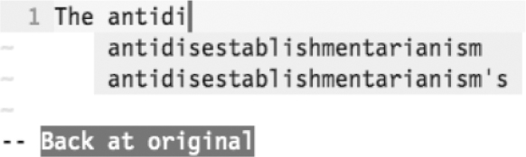

）可被用于触发此功能。
）可被用于触发此功能。技巧114使用字典中的单词进行自动补全
Vim字典自动补全，会根据某个单词列表，创建自己的补全建议列表。通过对Vim进行配置，我们可以让字典自动补全功能与内置的拼写检查功能使用同一份单词列表。
有时候，我们可能想通过自动补全功能输入某个单词，但它并没有在任何打开的缓冲区、包含文件或者标签文件中出现过。在这种情况下，可以在字典中进行查找。
<C-x><C-k>命令（参见:h compl-dictionary）可被用于触发此功能。
为了激活该功能，我们需要为Vim提供一份合适的单词列表。最简单的方法就是通过运行:set spell来激活Vim的拼写检查功能（有关更多的细节，请参见第20章）。一旦我们输入<C-x><C-k>命令，所有位于拼写字典中的单词都会变成补全建议项。
如果你不想激活拼写检查功能，也可以通过 ‘dictionary’ 选项来指定一个或多个含有单词列表的文件（参见:h 'dictionary'）。
当你想输入一个长单词或者很难拼写的单词时，字典自动补全也许最管用了。这里有一个例子：

除此之外，还有一种通过拼写字典实现自动补全的方式。我们将在技巧121中看到其应用的实例。